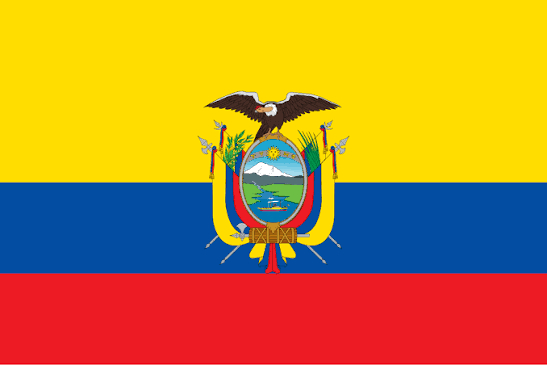

Moroni Balarezo
About Me
My name is Moroni Balarezo, and I am from Ecuador. I am currently studying web development because I am very interested in technology and programming. I enjoy learning how websites are created and how HTML, CSS, and JavaScript work together to build something useful and attractive. One of my goals is to continue improving my programming skills so I can become a better developer in the future. I also enjoy solving problems and learning new things, even when they are challenging at first. For me, studying web development is a great opportunity to grow personally and professionally, and I am excited to continue learning and creating new projects.
Quito, Ecuador

Ecuador is a beautiful and diverse country located in South America. Even though it is relatively small, it has an incredible variety of landscapes, climates, and cultures. The country is divided into four main regions: the Andes Mountains, the Amazon rainforest, the Pacific Coast, and the Galápagos Islands. Each region has its own traditions, food, wildlife, and natural attractions. Quito, the capital city, is located high in the Andes and is known for its historic center, colonial architecture, and beautiful mountain views. Ecuador is also famous for its biodiversity and unique species, especially in the Galápagos Islands. I am proud to be from Ecuador because it is a country full of natural beauty, cultural traditions, friendly people, and many amazing places to explore.